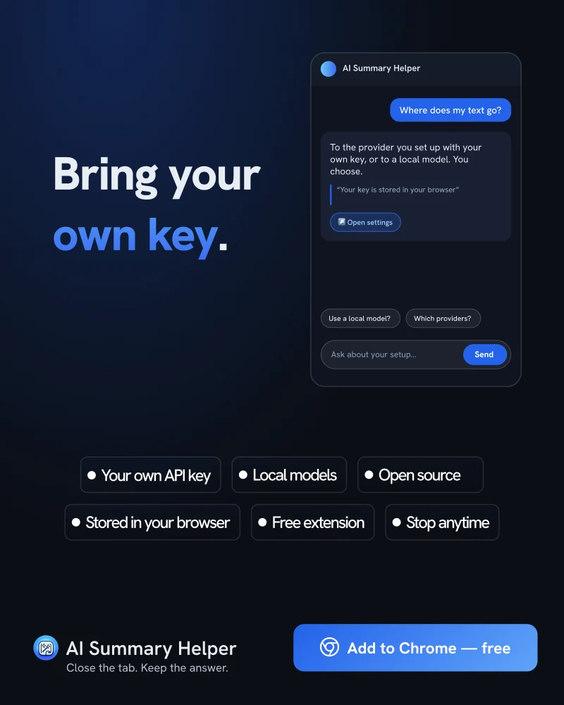

Your Key. Your Model. Your Data.
Most AI tools put a server between you and the model. Here is what changes when there isn’t one, and what still depends on you.
Every AI summary has the same shape: some text goes out, some text comes back. The question that decides how much you should trust the tool is who sits in the middle. With many products there is a company server there, and your reading passes through it on the way to a model you didn’t pick.
What “bring your own key” means here
You create an API key with a provider you already trust, paste it into AI Summary Helper, and choose a model. When you summarize a page, the extension’s background worker sends the text straight to that provider and streams the answer back. There is no AI Summary Helper server in that path for your own key.
You can also point it at a model running on your own machine, for example through Ollama. In that case the page text never leaves your computer at all.

Where your key lives
The key is stored in your browser’s local extension storage, not in synced storage. That means it is not copied to other devices through your browser account. The flip side is that you enter it once per browser. Keys are only used to talk to the provider you configured them for.
What this does and doesn’t protect
Be precise about this. Bringing your own key removes a middleman. It does not remove the model provider: whatever you send to a hosted model is covered by that provider’s own terms and retention rules, so read them. Only a local model keeps the text entirely on your machine, and local models are usually smaller and slower than hosted ones.
The project is open source, so you don’t have to take any of this on trust. The code that handles keys and requests is in the repository, and you can read it.
Choosing a setup
- Everyday reading: a hosted model from a provider whose terms you are comfortable with. Fast, good quality, and you control the key.
- Sensitive material: a local model. Slower and less capable, but nothing leaves the machine.
- Experimenting: add more than one provider and compare answers on the same article. That is the quickest way to learn which model suits which kind of text.
The point isn’t that one setup is right. It is that the choice stays with you.
AI Summary Helper is a free Chrome extension.
Add to Chrome